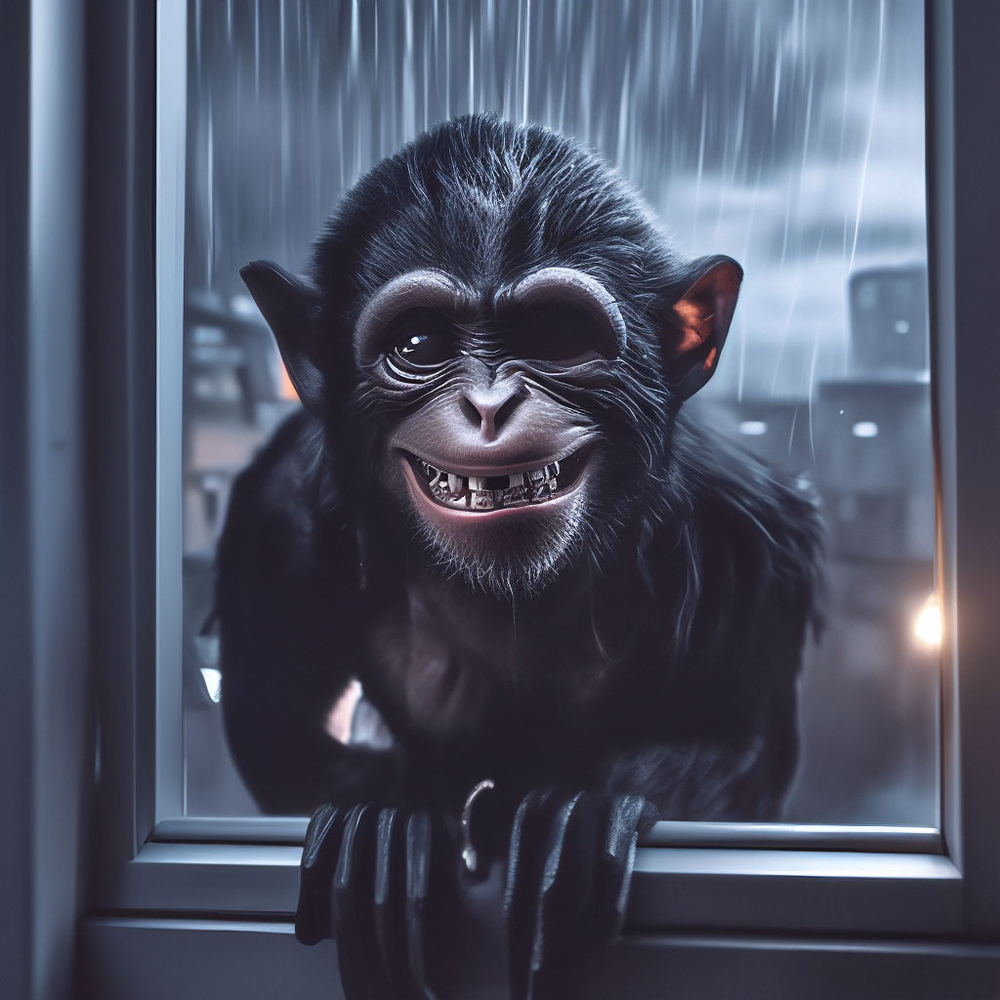

6. Хата, у якой немагчыма пераначаваць
Халера! Камера засякла нейкую істоту… Трошкі пазней вам яе пакажу, калі адсюль выберемся, але мы пакуль лічам, што гэта нейкая жывёла. Шмат жа жывёл водзіцца тут? Ва ўсялякім разе думаю, што гэта нейкі янот ці трус.

А яшчэ мы зразумелі, што за гук мы чулі - гэта нейкі смех… Ён стаў больш дакладны і зразумелы тыпа. Складана сказаць, што тут адбываецца, мабыць у начы мы глюкі нейкія атрымалі ад цемры, пылу ці яшчэ чаго, усё ж гэта балота, атмасфера жудасная… Спадзяюся, што ўсё будзе файна. Пазычце нам поспехаў!! А яшчэ на фота малпа, вось штосьці падобнае мы ё бачылі, але быццам бы з рагамі невялічкімі. Не ведаю, зараз пойдзем спрабаваць спаць, але гэтае лаханне, рогат, вусцішна жах, піздзец...
Наступны: 7. Гісторыі на сайце Беларускага філіялу
Ацэнка: 7.5/10
Філіял: Беларускі
Аўтар: Хведар Звычайны